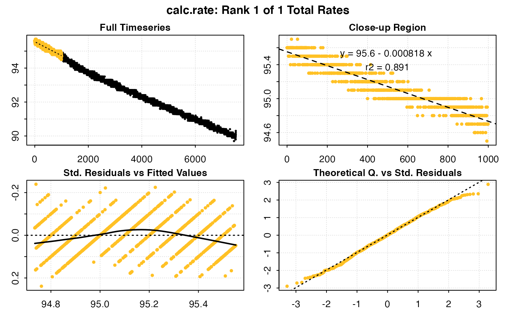
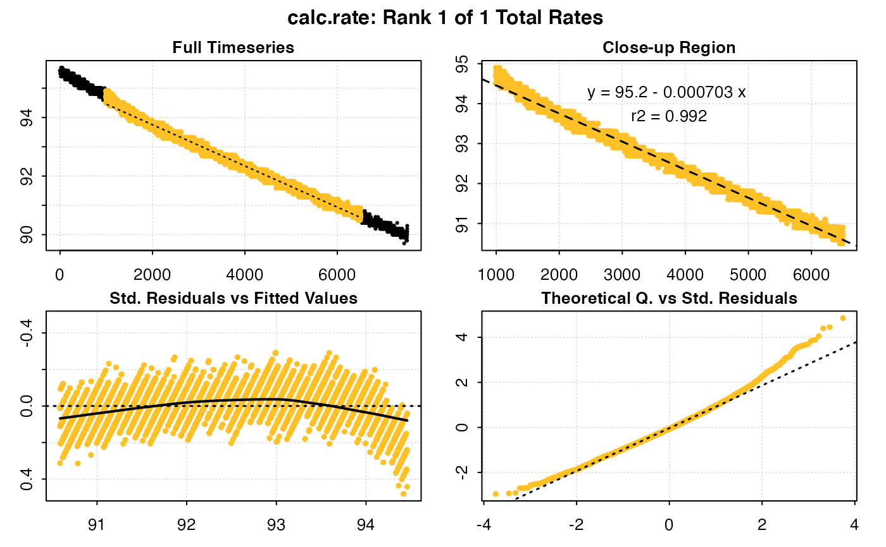

calc_rate calculates the rate of change in oxygen concentration over time
in a data frame. You can perform single or multiple regressions on subsets of
the data frame by calling the from and to arguments.
calc_rate(x, from = NULL, to = NULL, by = "time", plot = TRUE)
Arguments
| x | data frame or object of class |
|---|---|
| from | numeric vector. Defaults to NULL. Defines the lower bound(s) of
the data frame to subset. Subsetting is based on the argument: |
| to | numeric vector. Defaults to NULL. Defines the upper bound(s) of the
data frame to subset. Subsetting is based on the argument: |
| by | string. |
| plot | logical. Defaults to TRUE. Plot the results. |
Value
A list object of class calc_rate.
Details
There are no units involved in calc_rate. This is a deliberate decision.
Units are called in a later function when absolute and/or mass-specific
rates of oxygen use are computed in convert_rate() and convert_DO().
Examples
#> #> # plot.calc_rate # ---------------------- #> calc_rate: Plotting rate from position 1 of 1 ...#> -----------------------------------------#> #> # print.calc_rate # --------------------- #> Rank 1 of 1 rates: #> Rate: -0.0009793698 #> #> To see full results use summary(). #> -----------------------------------------calc_rate(sardine.rd, 93, 92, by = 'o2') # subset by O2#> #> # plot.calc_rate # ---------------------- #> calc_rate: Plotting rate from position 1 of 1 ...#> -----------------------------------------#> #> # print.calc_rate # --------------------- #> Rank 1 of 1 rates: #> Rate: -0.0006985077 #> #> To see full results use summary(). #> -----------------------------------------calc_rate(sardine.rd, 1, 1000, by = 'row') # subset by row#> #> # plot.calc_rate # ---------------------- #> calc_rate: Plotting rate from position 1 of 1 ...#> -----------------------------------------#> #> # print.calc_rate # --------------------- #> Rank 1 of 1 rates: #> Rate: -0.0008184728 #> #> To see full results use summary(). #> -----------------------------------------x <- calc_rate(sardine.rd, .8, .2, by = 'proportion') # subset by proportion#> #> # plot.calc_rate # ---------------------- #> calc_rate: Plotting rate from position 1 of 1 ...#> -----------------------------------------x#> #> # print.calc_rate # --------------------- #> Rank 1 of 1 rates: #> Rate: -0.0007033065 #> #> To see full results use summary(). #> -----------------------------------------#> #> # summary.calc_rate # ------------------- #> Summary of all rate results: #> #> rank intercept_b0 rate_b1 rsq row endrow time endtime oxy endoxy #> 1: 1 95.15812 -0.0007033065 0.992 994 6500 993 6499 94.5 90.9 #> rate.2pt rate #> 1: -0.0006538322 -0.0007033065 #> -----------------------------------------#> #> # plot.calc_rate # ---------------------- #> calc_rate: Plotting rate from position 1 of 1 ...#> -----------------------------------------# Using a vector in 'from' and 'to' perform multiple measurements: data("intermittent.rd") calc_rate(intermittent.rd, c(200,2300,4100), c(1800,3200,4600), by = 'time')#> #> # plot.calc_rate # ---------------------- #> calc_rate: Plotting rate from position 1 of 3 ... #> To plot others use 'pos'#> -----------------------------------------#> #> # print.calc_rate # --------------------- #> Rank 1 of 3 rates: #> Rate: -0.0005734109 #> #> To see other results use 'pos' input. #> To see full results use summary(). #> -----------------------------------------